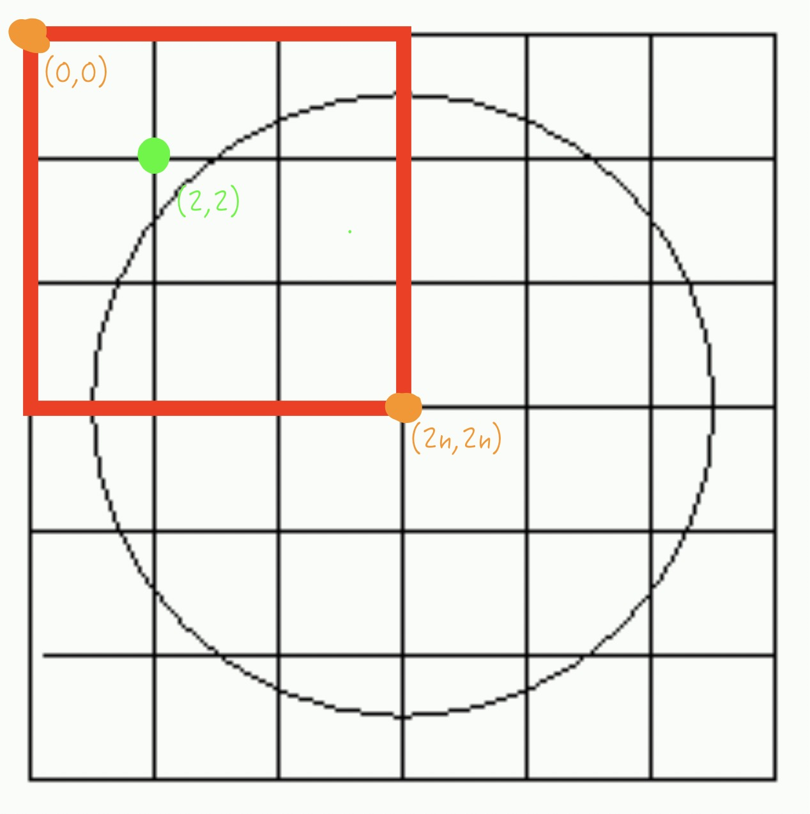

這篇主要是記錄一些難在數學觀念，或是考點主要是數學的題目。
這題的解法就是直接套一元二次方程式的公式解 ，為了讓程式的可讀性變高，我才使用d e f這三個變數。
註：在解的時候一直遇到”ValueError: math domain error”這個錯誤，查了才發現sqrt()裡面的數值除了不能為負，也不能為整數。
1 2 3 4 5 6 7 8 9 10 11 import matha,b,c=map (int ,input ().split()) d = b**2 -4 *a*c e = b/(-2 *a) if d>0 : f = math.sqrt(d)/2 print ('Two different roots x1=%d , x2=%d' %(int (e+f),int (e-f))) elif d==0 : print ('Two same roots x=%d' %int (e)) else :print ('No real root' )
如果一個正整數的因數，除了1以外，沒有任何因數小於sqrt(自己)，那麼它就是個質數。基於題目的最大測資是10^8以內，所以我就建一個到10^4的質數表，只要這個數經歷了整個質數表的風波後，還是沒完全整除，這時就直接宣告它剩下的部分。
1 2 3 4 5 6 7 8 9 10 11 12 13 14 15 16 17 18 19 20 21 22 23 24 25 26 27 28 29 30 31 32 33 34 35 36 37 38 39 40 import mathn = int (input ()) prime = [] base = [] exp = [] for i in range (2 , int (math.sqrt(n))+1 ): isPrime = 1 for j in range (2 , int (math.sqrt(i))+1 ): if i%j == 0 : isPrime = 0 ;break if isPrime == 1 : prime.append(i) index = 0 while n>1 and index<len (prime): count = 0 while n % prime[index] == 0 : count+=1 ;n//=prime[index] if count>0 : base.append(prime[index]) exp.append(count) index+=1 finish = 0 if n == 1 :finish = 1 for i in range (len (base)): if exp[i]>1 :print ('%d^%d' %(base[i], exp[i]), end='' ) else :print (base[i], end='' ) if i == len (base)-1 :break print (' * ' ,end='' ) if finish == 0 : if len (base)>0 :print (' *' ,n) else :print (n)
看到很多人都說直接代n^2-n+2就好，我想了很久都想不透，直到看到這位北一女同學的解釋
1 2 3 4 5 6 try : while 1 : n=int (input ()) print (int (n*n-n+2 )) except EOFError: pass
這題是考賽局理論，公式就是當有n個人是紅帽，就需要n天，如果在場有人是白帽，則還需要再加一天，你們可以先從只有一頂紅帽，來開始模擬這些罪犯是怎麼推測自己帽子的顏色。如果想不透為什麼公式是這樣的話，可以看這裡：解題想法
這題給的測資的量也太多，光這樣就要0.7秒才能跑完，恐怖。
1 2 3 4 5 6 7 try : while 1 : n,m=map (int ,input ().split()) if n>m:print (m+1 ) else :print (m) except EOFError: pass
這題我是用等差數列來解，想說一項一項加很容易會TLE。
Step 1
Step 2
Step 3
ee + e - (s s - s + 2*m) = 0
Step 4
e = [-1 ± sqrt(1 + 41 (ss - s + 2 m))] / 2
取正號
e的那行公式就是藉由上面的4個步驟求得的，接下來講n。既然上面有提到從首項s加到e會有e-s+1項，那為什麼n還要+1？
舉1 5為例，s=1, m=5代入e，e=2.701…。這時對e取整數會變2，意思就是明明數到2就停了，3並沒有數到，所以+1。
結論：無論明明是否會剛好數到總和為m，都要+1，所以n=e-s+2。
1 2 3 4 5 6 7 8 9 10 11 import mathtry : while 1 : s,m=map (int ,input ().split()) if m<0 :print (1 );continue e=( math.sqrt( 1 +4 *(s*s-s+2 *m) )-1 ) / 2 n=int (e)-s+2 print (n) except EOFError: pass
每次做這種和精度有關的題目，總是會先WA幾次，一直調整才有AC，不過這次倒是學到了一種減少誤差的方法：
當該數值>0，就+0.00001。(10^-4我有試過，但誤差還是太大，所以用10^-5。)
1 2 3 4 5 6 7 8 9 10 11 12 13 14 15 16 17 #include <iostream> using namespace std;int main () int n,i; float m,p,r; cin>>n; for (i=0 ;i<n;i++){ cin>>m>>p; r=(p-m)*100 /m; if (r>=0 ){r+=0.00001 ;} else {r-=0.00001 ;} if (100 *(p-m)>=10 *m || 100 *(p-m)<=-7 *m){printf ("%3.2f%% dispose\n" ,r);} else {printf ("%3.2f%% keep\n" ,r);} } return 0 ; }
原來C++也有內建的GCD函式，酷欸！只不過要先引用algorithm，然後函式長這樣：
1 2 3 4 5 6 7 8 9 10 11 #include <iostream> #include <algorithm> using namespace std;int main () int a,b; while (cin>>a>>b){ cout<<__gcd(a,b)<<"\n" ; } return 0 ; }
原本看到x<2*10^9就想直接先建表，但是我光是從2建到sqrt(2*10^9)(這個值約為44722)，就花了5秒多 。而且我還有用以下幾個條件提升速度：
1.偶數直接跳過
加上這題的測資量算小，所以後來還是直接判斷。
基於質數只有2是偶數，其他都是奇數，因此我先把2單獨拉出來除，剩下的再用while迴圈偵測。為了求快速，我最多只讓index跑到44725，但這樣子遇到大質數就會沒辦法除，所以我再加一個判斷式x!=1來判斷x是否除乾淨了，沒有的話就代表x是一個大質數，直接加到sum裡面就好。
1 2 3 4 5 6 7 8 9 10 11 12 13 14 15 16 17 #include <bits/stdc++.h> using namespace std;int main () int x; while (cin>>x){ int index=3 ,sum=0 ; while (x%2 ==0 ){x/=2 ;sum+=2 ;} while (x>1 && index<=44723 ){ while (x%index == 0 ){x/=index;sum+=index;} index+=2 ; } if (x!=1 ){sum+=x;} cout<<sum<<"\n" ; } return 0 ; }
總算是有我也能一行解的題目了，題目說轉到美國時區是往回15小時，這裡我是用往前9小時替代，而且用mod我就可以不用if。
1 print ((int (input ())+9 )%24 )
這題其實就頭尾比對，判斷該陣列是否有迴文(palindrome) 就OK了，我只是單純因為二維轉一維的部分有用到數學運算，所以放這裡XD。
1 2 3 4 5 6 7 8 9 10 11 12 13 14 15 16 17 18 19 20 21 22 23 24 25 26 27 28 #include <bits/stdc++.h> using namespace std;int main () ios::sync_with_stdio (false ); int t,n,m,i,j; cin>>t; while (t--){ cin>>n>>m; int map[121 ]; for (i=0 ;i<n;i++){ for (j=0 ;j<m;j++){ cin>>map[i*m+j]; } } int palin=1 ; for (i=0 ;i<n*m/2 ;i++){ if (map[i]!=map[n*m-1 -i]){ palin=0 ;break ; } } if (palin){cout<<"go forward\n" ;} else {cout<<"keep defending\n" ;} } return 0 ; }
這題就內積題，至於內積怎麼算題目也有貼心的講解。
在讀取的部分，維度一定是正整數，然後會被輸入就代表該維度的值不會是0，所以我就設定當dim和value其中一個為0就跳出while迴圈，而只有結尾的”0:0”會符合這個條件。
再來是乘法的部分，我這邊舉個例子，兩個向量分別為[1:1, 3:2, 5:3]、[1:4, 2:3, 3:5, 5:6, 10:8, 50:9]。
做完之後，vec2向量的[10:8, 50:9]可以忽略，因為vec1向量最大的維度只有5，那自然維度10、維度50就沒有數字與他們相乘。當ai小於a不成立時，就代表a已經算到最大的維度了，bi小於b不成立的原因同理。
不專業分析
這題大概是離上榜最接近的一題，只差在我用的記憶體比較多Orz。
1 2 3 4 5 6 7 8 9 10 11 12 13 14 15 16 17 18 19 20 21 22 #include <stdio.h> typedef struct node {int d,v;}vector ;int main () vector vec1[15005 ],vec2[15005 ]; int a=0 ,b=0 ,i; while (scanf ("%d:%d" ,&vec1[a].d,&vec1[a].v) && vec1[a].d && vec1[a].v){a++;} while (scanf ("%d:%d" ,&vec2[b].d,&vec2[b].v) && vec2[b].d && vec2[b].v){b++;} int ai=0 ,bi=0 ; long long total=0 ; while (ai<a && bi<b){ if (vec1[ai].d > vec2[bi].d){bi++;} else if (vec1[ai].d < vec2[bi].d){ai++;} else { total += vec1[ai].v * vec2[bi].v; ai++;bi++; } } printf ("%lld\n" ,total); return 0 ; }
這題我在一年前有在別的Online Judge平台寫過，當初我看到這題的時候是直接放棄，因為我只知道這題它並不是單純的26進位，也找不到轉換的規律。現在第二次再戰這題的時候，我看到了這篇b593-Code-解題心得
1 2 3 4 5 6 7 8 9 10 11 12 13 14 15 16 17 18 19 20 21 22 23 24 25 26 27 28 29 30 31 32 33 34 35 36 37 38 39 40 41 42 43 44 45 46 47 48 from math import factorial as facdef combine (m,n ): return fac(m) // fac(n) // fac(m-n) while 1 : s=input () if s[0 ]=='0' : break asc=1 for i in range (len (s)-1 ): if ord (s[i])>=ord (s[i+1 ]): asc=0 continue if asc==0 : print (0 ) continue way=0 for i in range (1 ,len (s)): way += combine(26 ,i) ordl=[0 ] for i in range (len (s)): ordl.append( ord (s[i]) - ord ('a' ) ) ordList=[] for i in range (len (ordl)-1 ): ordList.append( ordl[i+1 ] - ordl[i] ) origin, num = 1 , 25 for i in range (len (s)-1 ): for j in range (1 -origin ,ordList[i]): way += combine(num-j, len (s)-i-1 ) origin=0 num-=ordList[i] way += ordList[len (s)-1 ] print (way)
這題就是攝氏華氏轉換，我覺得這題最難的部分其實是在輸出，因為這題輸出的規定是答案為整數就輸出整數，浮點數的話就是小數點幾位就輸出幾位，不過用C++寫的就沒有這個困擾，一樣cout就好。用C或Python的人就沒這麼方便，不過還好有’%g’這個格式，讓我們也能直接輸出。
1 print ('%g' %(float (input ())*9 /5 +32 ))
本來想說這題就Cn取k，然後再取log直接結束。
1 2 3 4 5 6 7 8 9 10 11 12 from math import factorial as facimport mathdef combine (m,n ): return fac(m) // fac(n) // fac(m-n) try : while 1 : n,k=map (int ,input ().split()) print ( int ( math.log( combine(n,k), 10 ) ) + 1 ) except EOFError: pass
看來是我太天真，雖然最後的結果保證是在int的範圍內，但輸入的n、k並沒這麼說，代表很有可能會有long的情況出現。所以我換個思路，改個方式運用log和組合公式的特性來解。
首先，在log的世界裡，a*b就是log(a)+log(b)，以此類推，n!就是log(1)+…+log(n)。然後除法在log的世界裡就是減法。
再來，C(n,k) = n! / ( k! * (n-k)! )，其實我們不需要將n!、k!、(n-k)!全部求出來，舉C(10,3)為例，C(10,3) = 10! / (3! * 7!)，先做10!/7! ，你會發現分子分母都有1*2*…*7，可以直接消掉，這時就剩下10*9*8 / 3! ，所以我們只需要log(10)加到log(8)，然後再減log(1)到log(3)就能求出C(10,3) 的log值。
最後，在分子的部分，用max能確保被消掉的數字比較多，只需要較少的加法運算；在分母的部分，用min能確保減法運算比較少。調整完後，我也成功的將執行時間壓在一秒內，不過離上榜還是有段距離😭。
1 2 3 4 5 6 7 8 9 10 11 12 13 14 15 16 17 18 19 20 21 import mathdef fac (n,k ): t=0 for i in range (n,max (n-k,k),-1 ): t += math.log(i,10 ) for i in range (min (n-k,k),1 ,-1 ): t -= math.log(i,10 ) return t try : while 1 : n,k=map (int ,input ().split()) print (int (fac(n,k))+1 ) except EOFError: pass
雖然題目是說陣列應用，但這題可以不用開陣列存小數點後的位數，就直接用迴圈每算出一位數就印出一位數，這樣不僅比較快，也比較省記憶體。
1 2 3 4 5 6 7 8 9 10 11 12 13 14 15 16 17 #include <stdio.h> int main () int a,b,n,i; while (scanf ("%d%d%d" ,&a,&b,&n)!=EOF){ int tmp = a/b; printf ("%d." ,tmp); a -= b * tmp; for (i=0 ;i<n;i++){ a*=10 ; printf ("%d" ,a/b); a%=b; } printf ("\n" ); } return 0 ; }
這題的難點在於，找出平面數與總空間數兩者的規律，感謝這位大大 (n^3+5n+6)/6 這個公式怎麼來的了。
1 2 3 4 5 6 try : while 1 : a = int (input ()) print (int ((a**3 +5 *a+6 )/6 )) except EOFError: pass
這題真的難搞，我一開始想說建表，但是卻一直TLE。後來改成不建表後，還是吃了兩次WA ，才終於AC，哭啊。
1 2 3 4 5 6 7 8 9 10 11 12 13 14 15 16 17 18 19 20 21 22 23 24 25 26 27 28 29 30 31 32 33 34 35 36 37 38 39 40 41 42 43 44 45 46 47 48 49 50 51 52 53 54 55 56 57 58 59 60 61 62 63 64 65 66 67 68 69 70 71 72 #include <stdio.h> #include <math.h> int prime[1250 ]={0 }, ind=1 ;int setPrime (int n, int lim) int isP=1 ; for (int i=2 ; i<lim; i++){ if (n%i==0 ){isP=0 ;break ;} } return isP; } int isPrime (int n) int sn=(int )sqrt (n)+1 ; int lp=ind; int ind=0 , isP=1 ; while (ind<lp && prime[ind]<sn){ if (n % prime[ind] == 0 ){isP=0 ;break ;} ind++; } return isP; } int main () int i, a, b, c, d; prime[0 ]=2 ; for (i=3 ; i<10001 ; i+=2 ){ if (setPrime(i, (int )sqrt (i)+1 ) == 1 ){ prime[ind]=i;ind++; } } while (scanf ("%d%d" ,&c, &d)!=EOF){ int count=0 ; if (c==d){printf ("%d\n" ,isPrime(c));} else { if (c>d){b=c;a=d;} else {a=c;b=d;} if (a==1 ){a++;} if (a%2 ==0 && a>2 ){a++;} if (b<=10000 ){ int start=0 ,end=0 ; for (i=0 ; i<ind; i++){ if (prime[i]>=a){ if (prime[i]==a){count++;} start=i;break ; } } for (i=start; i<ind; i++){ if (prime[i]>=b){ if (prime[i]>b){count--;} end=i;break ; } } count=count+end-start; } else { for (i=a; i<=b; i+=2 ){ count+=isPrime(i); } } printf ("%d\n" ,count); } } return 0 ; }
1 2 3 4 5 6 7 8 9 10 11 12 13 14 15 16 17 18 19 20 #include <stdio.h> int main () int a, b; while (scanf ("%d%d" ,&a,&b) == 2 ){ if (a > b){printf ("0\n" );continue ;} int num = 0 , i, j; if (a > 2 ){i = a;} else {i = 2 ;} for (; i <= b; i++){ if (i % 2 == 0 && i != 2 ){continue ;} num++; for (j = 2 ; j * j <= i; j++){ if (i % j == 0 ){num--;break ;} } } printf ("%d\n" , num); } return 0 ; }
這題不難，主要是得搞清楚每根蘿蔔的效果，基本上能夠熟悉流程的話，那這題就沒什麼問題了。
1 2 3 4 5 6 7 8 9 10 11 12 13 14 15 16 17 18 19 20 21 22 23 24 25 26 27 28 29 30 31 32 33 34 35 36 37 38 39 40 41 42 43 44 45 46 47 48 49 50 51 52 53 54 55 56 57 58 59 #include <stdio.h> #include <string.h> int isDie (int n) if (n<=0 ){return 1 ;} return 0 ; } int main () long long x,y,z,w,n,m,t; char str[1000 ]; scanf ("%lld" ,&t); while (t--){ scanf ("%lld%lld%lld%lld%lld%lld" ,&x,&y,&z,&w,&n,&m); getchar(); gets(str); int die = 0 , i; long long poison = 0 ; for (i=0 ;i<strlen (str);i++){ if (die){printf ("bye~Rabbit\n" );break ;} switch (str[i]){ case '0' : m -= poison; die = isDie(m); break ; case '1' : m -= poison; die = isDie(m); m += x; break ; case '2' : m -= poison; die = isDie(m); m += y; break ; case '3' : m -= poison; m -= z; die = isDie(m); break ; case '4' : m -= poison; m -= w; die = isDie(m); poison += n; break ; default : break ; } } if (!die){printf ("%lldg\n" ,m);} } return 0 ; }
這題可以不用建表，我先從2^32開始往下找，如果輸入的數大於當前的基數，則輸出1，否則輸出0，最後再算總共幾個1(parity)就好。
1 2 3 4 5 6 7 8 9 10 11 12 13 14 15 16 17 18 19 20 21 22 23 while 1 : a = int (input ()) if a == 0 : break print ('The parity of' ,end=' ' ) parity = 0 for i in range (32 , -1 , -1 ): if a >= 2 **i: base = i break for i in range (base, -1 , -1 ): if a >= 2 **i: print (1 ,end='' ) a -= 2 **i parity += 1 else : print (0 ,end='' ) print (' is' ,parity,'(mod 2).' )
題目中有這麼一句話：不得使用連續的項，那麼每個數字都有一個唯一的表示法 ，我的做法是先建一個Fibonacci表，然後從最大的base開始找，如果輸入的數大於當前的基數，則輸出1，否則輸出0。
1 2 3 4 5 6 7 8 9 10 11 12 13 14 15 16 17 18 19 20 21 22 f = [1 ,1 ] for i in range (2 ,39 ): f.append(f[i-1 ] + f[i-2 ]) for i in range (int (input ())): a = int (input ()) print (a,'= ' ,end='' ) for j in range (38 , 0 , -1 ): if a >= f[j]: base = j break for j in range (base, 0 , -1 ): if a >= f[j]: print (1 ,end='' ) a -= f[j] else : print (0 ,end='' ) print (' (fib)' )
3mn+2n+m 這個公式了。
1 2 n,m = map (int ,input ().split()) print (n*m*3 + n*2 + m)
其實討論區已經提出了x的條件，第一、x必須是2或5的倍數，第二、它只能是2或5的倍數，也就是對它做因式分解，只會看到2或5。所以我就建一個表，裡面放在範圍內符合這兩個條件的所有數。
1 2 3 4 5 6 7 8 9 10 11 12 13 14 15 16 17 18 19 20 21 22 23 24 25 26 27 28 29 30 31 32 33 34 35 x = [] gen = 2 while gen <= 100000000 : x.append(gen) gen *= 2 gen = 5 while gen <= 100000000 : x.append(gen) gen *= 5 i = 2 while i <= 100000000 : j = 5 while i*j <= 100000000 : x.append(i*j) j *= 5 i *= 2 x.sort() m = int (input ()) for i in range (m): n = int (input ()) for j in range (len (x)): if x[j] == n: print (j+1 ) break elif x[j] > n: print (j) break
這種大數題，對於Java、Python真的都是小菜一碟，但是如果一定要用C或C++來做這題，其實也可以不用理會題目給的判斷方法，像我是直接用直式除法，也就是小學生都會的方法，一位一位的除，跑完迴圈之後，tmp就是直式除法裡的餘數，再來判斷tmp是否為零即可。
1 2 3 4 5 6 7 8 9 10 11 12 13 14 15 16 17 18 19 20 21 22 23 24 #include <stdio.h> #include <string.h> int main () char d[101 ]; while (1 ){ scanf ("%s" ,d); if (d[0 ]=='0' ){break ;} int tmp=0 ,i; for (i=0 ;i<strlen (d);i++){ tmp = tmp*10 + d[i] - 48 ; tmp %= 17 ; } if (tmp){printf ("0\n" );} else {printf ("1\n" );} } return 0 ; }
本來想說把讀進來的ab，先轉成十進位，然後相加，最後把結果轉成十六進位。但看到測資三的的1.0s,<50M ，我怕了，我如果真的這樣搞，連試都不用試就知道會TLE 。不過還好討論區有提到用%o 讀進來ab，然後輸出直接用%X 變成十六進位的形式，不僅讓我的程式碼精簡很多，而且執行速度也提升很多。（用小寫x會導致輸出的十六進位的字母變成小寫）
1 2 3 4 5 6 7 8 9 10 11 #include <stdio.h> int main () long long n,a,b; scanf ("%lld" ,&n); while (n--){ scanf ("%llo%llo" ,&a,&b); printf ("%llX\n" ,a+b); } return 0 ; }
這題就是一直相加而已，比我想的還簡單。
1 2 3 4 5 6 7 8 9 10 11 12 13 14 15 16 17 18 19 #include <stdio.h> int main () int amt[101 ]={0 },s,n; while (scanf ("%d" ,&s) && s!=-1 ){ scanf ("%d" ,&n); amt[s] += n; } while (scanf ("%d" ,&s) && s!=-1 ){ scanf ("%d" ,&n); amt[s] += n; } for (int i=0 ;i<101 ;i++){ if (amt[i]){ printf ("%d %d\n" ,i,amt[i]); } } return 0 ; }
d221和b606是完全一模一樣的題目，只差在b606的測資比較和善，我甚至是解完b606後馬上把b606的code再送一次d221，直接用一段codeAC兩題。也順便學怎麼用priority_queue。
排序規則：從小排到大 。
priority_queue,less >
從大排到小 則是：
priority_queue<int,vector,greater >
一些重要函式：
push(a)：插入元素x到priority_queue
這題的話，我們就是盡量讓最小的數加最多次，換句話說就是每次都取最小的兩個數相加，然後把相加的結果放回數列。
1 2 3 4 5 6 7 8 9 10 11 12 13 14 15 16 17 18 19 20 21 22 23 24 #include <bits/stdc++.h> #define speedup ios::sync_with_stdio(false), cin.tie(0), cout.tie(0) using namespace std;int main () speedup; int n,i,x,a,b; while (cin>>n && n){ priority_queue< int , vector<int >, greater<int > > k; for (i=0 ;i<n;i++){ cin >> x; k.push (x); } long long cost = 0 ; while (k.size () > 1 ){ a = k.top ();k.pop (); b = k.top ();k.pop (); cost += a+b; k.push (a+b); } cout << cost << "\n" ; } return 0 ; }
做了這題才知道，原來Python也能和C、C++一樣指定要輸出多少位數。
Python 字串格式化教學與範例 1 2 3 4 5 6 7 8 9 try : while 1 : t = list (map (int ,input ().split())) t[3 ] %= 24 m = t[0 ]*60 + t[1 ] + t[3 ]*90 m %= 2160 print ('%d:%02d:%02d' %(m//60 ,m%60 ,t[2 ])) except EOFError: pass
這題的話要注意陷阱，題目說的順時針轉是將整個轉盤順時針轉，所以對數字來說是逆時針轉。同理，說逆時針就是數字順時針轉。然後因為轉1個數字就等於轉9度，所以我一開始先當作轉盤已經轉3圈(120個數字)，轉完數字後，最後再換算成角度。
1 2 3 4 5 6 7 8 9 10 11 12 13 #include <stdio.h> int main () int b,f,s,t; while (scanf ("%d%d%d%d" ,&b,&f,&s,&t) && b+f+s+t){ int deg = 120 ; deg += (b-f+40 )%40 ; deg += (s-f+40 )%40 ; deg += (s-t+40 )%40 ; printf ("%d\n" ,deg*9 ); } return 0 ; }
這題可以不用建立陣列儲存每位數，只要計算最後一位數就好。在判斷輸入那邊，因為有其中一個為0這種測資，所以我判斷a+b=0才跳出迴圈。還有a || b，原本打算用a && b，但萬一遇到901 99這種測資就會報錯，所以就乾脆算到兩個數都變0才結束。
1 2 3 4 5 6 7 8 9 10 11 12 13 14 15 16 17 18 #include <stdio.h> int main () int a,b,c; while (scanf ("%d%d" ,&a,&b) && a+b){ int carry=0 ,d=0 ; while (a || b){ c = a%10 +b%10 +d; if (c >= 10 ){d = 1 ;carry++;} else {d = 0 ;} a /= 10 ;b /= 10 ; } if (carry == 0 ){printf ("No carry operation.\n" );} else if (carry == 1 ){printf ("1 carry operation.\n" );} else {printf ("%d carry operations.\n" ,carry);} } return 0 ; }
之前有在UVa做過這題，不過當初是只要輸入的是迴文，就可以直接輸出，結果到了ZeroJudge，就算你一開始就是迴文，也得算，搞得程式碼變得比之前做的長很多。
1 2 3 4 5 6 7 8 9 10 11 12 13 14 15 16 17 18 19 20 21 22 23 24 25 26 27 28 29 30 31 32 33 34 35 36 37 38 39 40 41 42 43 44 45 #include <stdio.h> int main () int n; long long p,tmp,res; while (scanf ("%d" ,&n) != EOF){ while (n--){ int cnt = 0 ; scanf ("%lld" ,&p); while (1 ){ tmp = p;res = 0 ; while (tmp > 0 ){ res = res*10 + tmp%10 ; tmp /= 10 ; } if (p == res){ if (!cnt){ if (p < 5 ){ printf ("1 %lld\n" ,p*2 ); break ; } else { cnt++; p += res; } } else { printf ("%d %lld\n" ,cnt,p); break ; } } else { cnt++; p += res; } } } } return 0 ; }
透過觀察可以發現，個數為奇數的排是從左下往右上，個數為偶數的排是從右上往左下，然後再找到奇數排、偶數排的規律，直接輸出即可。
1 2 3 4 5 6 7 8 9 10 11 12 13 14 15 16 17 18 19 20 21 22 23 24 25 26 #include <stdio.h> int main () int n,i,idx,loc,diff; while (scanf ("%d" ,&n) != EOF){ for (i=1 ;i<=4473 ;i++){ if (i*(i+1 )/2 >= n){ idx = i; break ; } } loc = idx*(idx-1 )/2 ; diff = n-loc; if (idx%2 ){ printf ("TERM %d IS %d/%d\n" ,n,idx-diff+1 ,diff); } else { printf ("TERM %d IS %d/%d\n" ,n,diff,idx-diff+1 ); } } return 0 ; }
這題我開兩個陣列，p表示在自己之前有多少個質數(包含自己)，num存放所有質數。這題需要注意的是，質數從0開始，每兩筆輸出之間要多空一行。
再來是輸出的部分，這邊提供2*c <= k的輸出範圍：
k為奇數：從第k/2-(c-1)個質數～第k/2+(c-1)個質數
1 2 3 4 5 6 7 8 9 10 11 12 13 14 15 16 17 18 19 20 21 22 23 24 25 26 27 28 29 30 31 32 33 34 35 36 37 38 39 40 41 42 43 44 45 46 47 48 49 50 #include <stdio.h> int main () int p[1001 ]={0 },num[500 ]={0 },cnt=3 ,n,c,i,j,k; p[1 ]=1 ;p[2 ]=2 ;num[0 ]=1 ;num[1 ]=2 ; for (i=3 ;i<1001 ;i+=2 ){ int flag = 1 ; for (j=3 ;j*j<=i;j++){ if (i%j == 0 ){ flag = 0 ; break ; } } if (flag){ p[i] = cnt; num[cnt-1 ] = i; cnt++; } } int ind; for (i=1 ;i<1001 ;i++){ if (p[i]){ind = p[i];} else {p[i] = ind;} } while (scanf ("%d%d" ,&n,&c)!=EOF){ k = p[n];cnt--; printf ("%d %d:" ,n,c); if (2 *c > k){ for (i=0 ;i<k;i++){printf (" %d" ,num[i]);} printf ("\n\n" ); continue ; } int start = k/2 -c+1 , end = k/2 +c-1 ; if (k%2 ==0 ){start--;} for (i=start;i<=end;i++){ printf (" %d" ,num[i]); } printf ("\n\n" ); } return 0 ; }
解題想法 左上角與圓心的距離是否<=圓的半徑 ，是的話代表這個格子完全在圓裡面。右下角與圓心的距離是否<=圓的半徑 ，是的話代表這個格子部分在圓裡面。
1 2 3 4 5 6 7 8 9 10 11 12 13 14 15 16 17 18 19 20 21 22 23 #include <stdio.h> int main () int n,i,j; while (scanf ("%d" ,&n) != EOF){ int sgmt=0 ,cplt=0 ,tn=2 *n; for (i=0 ;i<tn;i+=2 ){ for (j=0 ;j<tn;j+=2 ){ if ((tn-i)*(tn-i)+(tn-j)*(tn-j) <= (tn-1 )*(tn-1 )){ cplt++; } else if ((tn-i-2 )*(tn-i-2 )+(tn-j-2 )*(tn-j-2 ) <= (tn-1 )*(tn-1 )){ sgmt++; } } } cplt*=4 ;sgmt*=4 ; printf ("In the case n = %d, %d cells contain segments of the circle.\nThere are %d cells completely contained in the circle.\n\n" ,n,sgmt,cplt); } return 0 ; }
本來想說這題就套函式算Cn取k直接輸出。
1 2 3 4 5 6 7 8 9 from math import factorial as facdef combine (m,n ): return fac(m) // fac(n) // fac(m-n) while 1 : n,m=map (int ,input ().split()) if n+m==0 :break print (combine(n,m))
又TLE，只好搬出上面b897用過的方法。
1 2 3 4 5 6 7 8 9 10 11 12 13 def combine (n,m ): t,mt=1 ,min (n-m,m) mmt=n-mt for i in range (n,mmt,-1 ): t *= i for i in range (1 ,mt+1 ): t //= i return t while 1 : n,m=map (int ,input ().split()) if n+m==0 :break print (combine(n,m))
我的策略就是，先全部放幣值比較大的硬幣，放到x元內的數量最大值。然後每次迴圈就看x元扣除幣值比較大的所有硬幣後，剩下的錢能否用幣值比較小的硬幣剛好湊到，檢查完如果不行就拿掉一個幣值比較大的硬幣，可以就輸出兩種幣值的數量總和。
1 2 3 4 5 6 7 8 9 10 11 12 13 14 15 16 17 18 19 20 #include <stdio.h> int main () int n,x,a,b,y,i,j; scanf ("%d" ,&n); for (i=0 ;i<n;i++){ scanf ("%d%d%d" ,&x,&a,&b); y = x/a; int can=0 ; for (j=y;j>=0 ;j--){ if ((x-a*j)%b == 0 ){ printf ("%d\n" ,j+(x-a*j)/b); can=1 ; break ; } } if (!can){printf ("-1\n" );} } return 0 ; }
這題如果只需要輸入一次n，我就能一行解了，可惡。如果n為奇數，兩條對角線的中心會重複，所以第二條要-1，如果n為偶數，則不用。
1 2 3 4 5 try : while 1 : print (eval ('{0}-({0}%2==1)' .format (int (input ())))) except EOFError: pass
封面圖源：CSDN